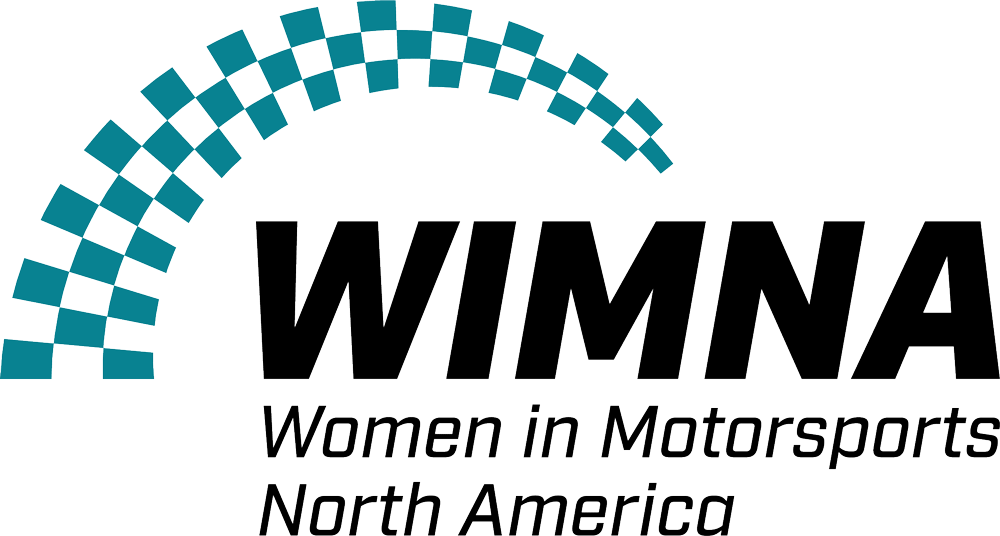
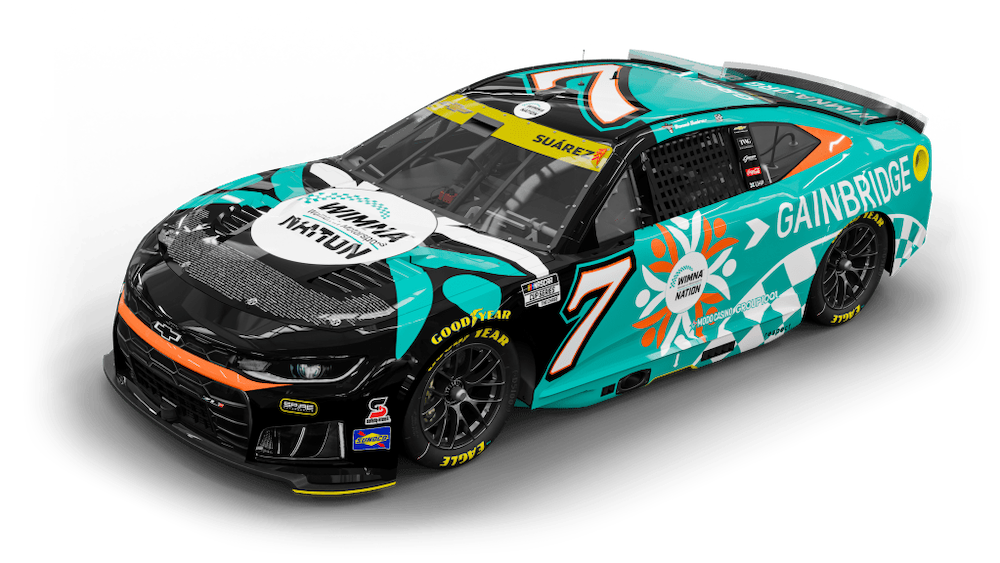

Spire Motorsports’ No. 7 car, driven by Daniel Suárez at the 2026 Kansas fall race, featuring the WIMNA logo and all WIMNA members’ names.
Community & career development
Women in Motorsports North America
WIMNA connects people across motorsports through networking, educational events, mentorship, and professional development. Women with Drive is its annual summit for learning, meeting people in the industry, and exploring careers throughout racing.
Useful forStudents and early-career professionals interested in technical, business, and operational roles.
I competed in the first annual Women with Drive case competition.